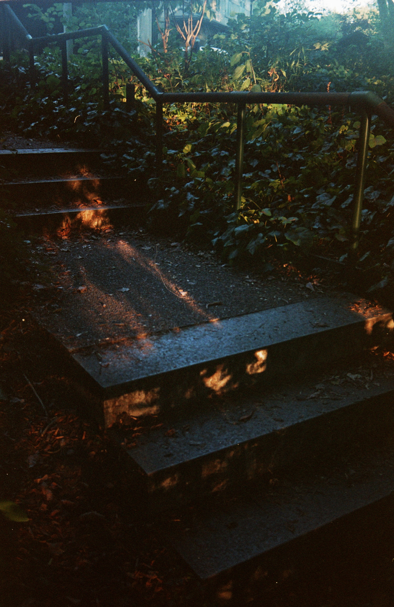
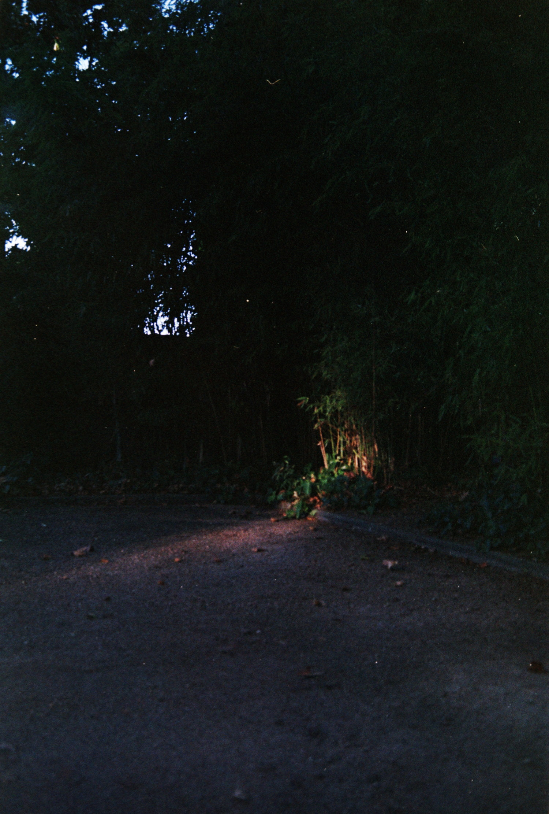
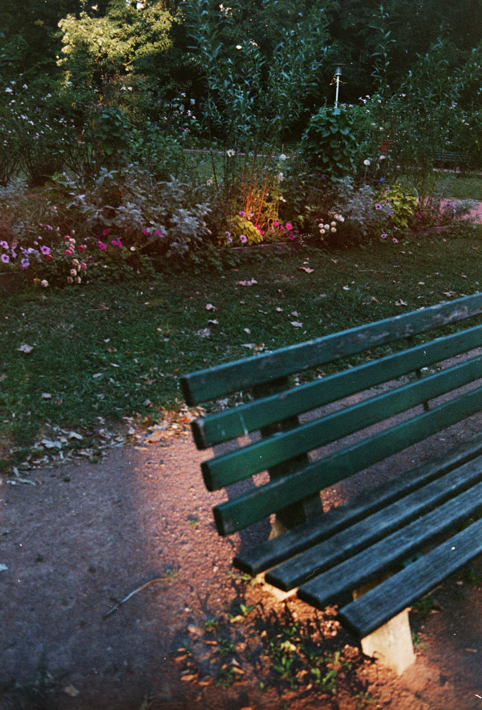
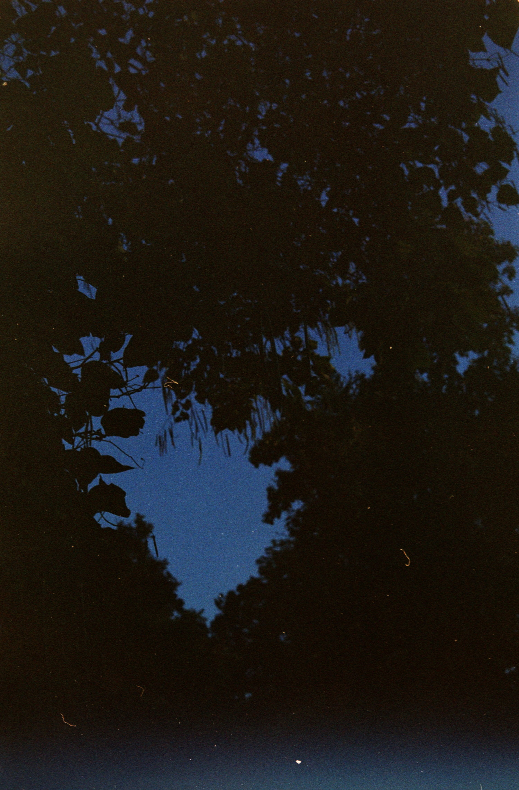

/ back to photography / Blues Hour It's getting melancolic around here.  2024-08 end-of-day France - Lyon - Parc de la Cerisaie 35mm Fuji Superia Reala 100 (expired) Minolta MD 35mm Minolta X-500 ⇑ Rigid geometry of stairs, through messy vegetation. The sun is about to leave, but still warmer than ever, projecting messy shadows on the cold old concrete.  2024-08 end-of-day France - Lyon - Parc de la Cerisaie 35mm Fuji Superia Reala 100 (expired) Minolta MD 35mm Minolta X-500 ⇒ Day reaching its end, You sit under the tree, And free the mind from distraction. You look up at the leaves, All silhouette you distinguish, Rounded shapes of shadows, there's just black, and blues, no more room for the doubts, Is that peace you feel ? ⇓ It feels so cold, yet so warm. The light is getting thin, but still painting splash of warmth here and there. Take your turn on the used bench, to breath for a minute. But make sure you sit on the right side to catch the last sun beam. You wouldn't want to feel cold, wouldn't you ?  2024-08 end-of-day France - Lyon - Parc de la Cerisaie 35mm Fuji Superia Reala 100 (expired) Minolta MD 35mm Minolta X-500 ⇐ This corner of the park was pretty mundane, a large gravel aread ending on a small forest of bamboo. And at this time of the day there's not much visible. But stronger than ever, a small beam of light came to pierce through the surrounding vegetation to light a spot of ground. And just like that the small corner suddenly become worth looking at. A beautiful contrast of warm sun and peaceful shadows with splashs of chlorophyles emerging from it.  2024-08 end-of-day France - Lyon - Parc de la Cerisaie 35mm Fuji Superia Reala 100 (expired) Minolta MD 35mm Minolta X-500 2024-08 end-of-day France - Lyon - Parc de la Cerisaie 35mm Fuji Superia Reala 100 (expired) Minolta MD 35mm Minolta X-500 ⇓ It feels so cold, yet so warm. The light is getting thin, but still painting splash of warmth here and there. Take your turn on the used bench, to breath for a minute. But make sure you sit on the right side to catch the last sun beam. You wouldn't want to feel cold, wouldn't you ? 2024-08 end-of-day France - Lyon - Parc de la Cerisaie 35mm Fuji Superia Reala 100 (expired) Minolta MD 35mm Minolta X-500 ⇑ Rigid geometry of stairs, through messy vegetation. The sun is about to leave, but still warmer than ever, projecting messy shadows on the cold old concrete. 2024-08 end-of-day France - Lyon - Parc de la Cerisaie 35mm Fuji Superia Reala 100 (expired) Minolta MD 35mm Minolta X-500 ⇐ This corner of the park was pretty mundane, a large gravel aread ending on a small forest of bamboo. And at this time of the day there's not much visible. But stronger than ever, a small beam of light came to pierce through the surrounding vegetation to light a spot of ground. And just like that the small corner suddenly become worth looking at. A beautiful contrast of warm sun and peaceful shadows with splashs of chlorophyles emerging from it. 2024-08 end-of-day France - Lyon - Parc de la Cerisaie 35mm Fuji Superia Reala 100 (expired) Minolta MD 35mm Minolta X-500 ⇒ Day reaching its end, You sit under the tree, And free the mind from distraction. You look up at the leaves, All silhouette you distinguish, Rounded shapes of shadows, there's just black, and blues, no more room for the doubts, Is that peace you feel ?